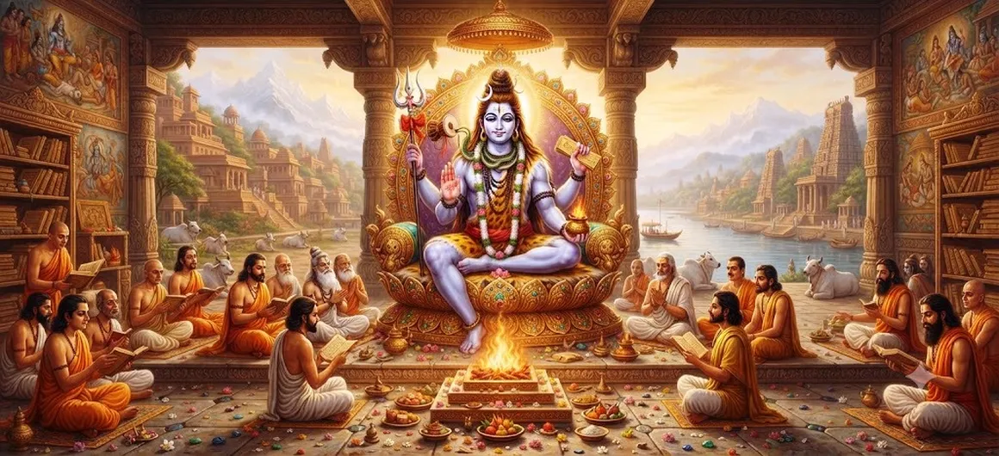

The Incarnation of Dvijeshvara
Chapter 27 of the Shatarudra Samhita narrates the sacred incarnation of Lord Shiva as Dvijeshvara, a leading Brahmin. The story continues the account of King Bhadrayu, whom Shiva had previously blessed in another form.
In order to test Bhadrayu's steadfastness and piety, Shiva and Parvati assume the appearance of a Brahmin couple. Through an illusory tiger and a difficult moral test, the king's courage, duty, and devotion are examined.
The narrative reaches its climax when Dvijeshvara reveals his true identity as Lord Shiva and grants blessings to Bhadrayu and his wife Kirtimalini.
Chapter 27 Highlights
Dvijeshvara Incarnation
Shiva manifests as Dvijeshvara, a leading Brahmin, to test Bhadrayu's steadfastness and piety.
King Bhadrayu
The king faces a severe test of courage, duty, and devotion.
The Illusory Tiger
Shiva creates an illusory tiger as part of the divine test.
Duty of Protection
Bhadrayu is reminded that protecting those who seek refuge is a central duty of a righteous king.
Devotion Tested
The test reveals the depth of Bhadrayu's devotion to Shiva.
Divine Revelation
Dvijeshvara finally reveals himself as Lord Shiva and grants the desired blessings.
Core Topics in This Chapter
King Bhadrayu and His Kingdom
Nandishvara introduces the story by recalling the excellent king Bhadrayu. After conquering his enemies with the power associated with Shiva's previous manifestation as a bull, Bhadrayu attained the throne.
His position as king establishes the setting for the later test, in which his responsibilities toward those seeking protection become central to the narrative.
Bhadrayu and Kirtimalini
The chaste lady Kirtimalini, daughter of Chandrāṅgada and Sīmantinī, becomes the wife of Bhadrayu.
She later participates in the sacred conclusion of the narrative and personally approaches Shiva to request a blessing for her parents.
The Royal Couple in the Forest
After the arrival of spring, Bhadrayu enters a beautiful and dense forest with his beloved queen. The setting becomes the place where Shiva carries out the divine test.
Shiva and Parvati assume the appearance of a Brahmin couple and create an illusory tiger through divine Māyā.
Shiva's Divine Test
The Brahmin couple appears to be terrified and cries for help as the illusory tiger pursues them. Bhadrayu sees their distress and responds as a king who has a duty to protect those who seek refuge.
Bhadrayu takes up his bow and attempts to protect the Brahmin couple. Yet the illusory tiger cannot be harmed by his arrows.
The Illusory Tiger
The tiger seizes the Brahmin's wife and carries her away. Bhadrayu's weapons prove ineffective against the creature, making the situation appear impossible.
The Brahmin then questions the king's strength and his ability to protect those who depend upon him. His words force Bhadrayu to examine the meaning of royal duty.
The Duty of a Protector
Dvijeshvara reminds Bhadrayu that the protection of distressed people who seek refuge is a fundamental duty of a righteous king.
The Brahmin challenges the king to consider whether weapons, learning, strength, and royal authority have any value if they cannot be used to protect the helpless.
The narrative therefore places responsibility and protection at the heart of Bhadrayu's test.
Bhadrayu's Resolve
Bhadrayu becomes deeply troubled by the thought that he has failed in his hereditary duty. He considers sacrificing his own life so that the Brahmin will not remain in grief.
When the Brahmin asks for Bhadrayu's queen, the king initially struggles with the demand. He recognizes the seriousness of the situation and the conflict between protecting the distressed and preserving his marriage.
Ultimately, Bhadrayu decides to give his wife to the Brahmin and then enter the fire, believing that this is the way to uphold his duty.
Revelation of Lord Shiva
Just as Bhadrayu is about to enter the fire with his mind fixed upon Shiva, Dvijeshvara reveals his true divine identity and stops him.
Bhadrayu sees Lord Shiva in a magnificent divine form, described with five faces and three eyes, bearing the Pināka and other divine attributes, adorned with the crescent moon and accompanied by the sacred imagery associated with Mahadeva.
Divine flowers descend from the sky, celestial instruments are played, and the gods arrive to witness and praise the revelation.
The Boons Granted by Shiva
Pleased with Bhadrayu's devotion, Lord Shiva offers him a boon. Shiva explains that the entire episode was arranged to test the king's feelings and emotions.
Shiva reveals that the woman seized by the tiger was the goddess Shiva herself and that the tiger was an illusory creation that could not truly be harmed by Bhadrayu's arrows.
Bhadrayu asks that his father Vajrabāhu and mother, together with himself and his wife, remain near Shiva. He also requests that Padmākara and Sanaya be included in this divine proximity.
Kirtimalini then approaches Shiva and requests that her parents, Chandrāṅgada and Sīmantinī, also remain joyfully near the Lord. Shiva grants the requested blessings.
Spiritual Lessons
The Dvijeshvara narrative places steadfastness, devotion, courage, responsibility, and protection of those who seek refuge at the centre of its moral teaching.
Bhadrayu's conduct shows that devotion is tested not merely by words but by decisions made during difficult circumstances.
The revelation of Shiva transforms the difficult trial into a moment of divine grace and direct vision of the Lord.
The chapter therefore presents devotion as something expressed through courage, duty, sacrifice, and unwavering remembrance of Shiva.
Key Teachings of Chapter 27
Protection
A righteous protector must respond to those who seek refuge.
Devotion
True devotion remains steady when circumstances become difficult.
Courage
Bhadrayu demonstrates courage when confronted by an apparently impossible challenge.
Selflessness
Bhadrayu places the protection of another person above his own personal safety.
Divine Grace
Shiva's revelation shows the culmination of the divine test.
Remembrance of Shiva
Bhadrayu remains devoted to Shiva even at the most difficult moment of the test.
Spiritual Reflection
The incarnation of Dvijeshvara presents a powerful story of devotion tested through difficult circumstances. Bhadrayu's encounter with the Brahmin couple forces him to consider the responsibilities of a protector and the meaning of steadfast devotion. The final revelation of Lord Shiva shows that the apparent difficulty was part of a divine test. The chapter encourages the devotee to remain courageous, responsible, compassionate, and devoted to Mahadeva even when the path appears difficult.
Living the Message of Chapter 27
The story can be reflected upon in daily life by remembering that responsibility is meaningful only when it is expressed through action.
The chapter also encourages courage when facing difficult circumstances and compassion toward people who depend upon one's help.
Above all, the narrative places sincere remembrance of Shiva at the heart of spiritual steadfastness.
Key Spiritual Concepts
The manifestation of Lord Shiva as a leading Brahmin who tests Bhadrayu's steadfastness and devotion.
The king whose courage, duty, and devotion are tested.
Bhadrayu's wife who later approaches Shiva with a request for her parents.
The illusory power through which the Brahmin couple and tiger become part of Shiva's test.
The righteous duty of protecting those who seek refuge.
The divine blessing revealed after Bhadrayu successfully faces the test.
Connection with Chapter 26
Chapter 26 presents Shiva's Incarnation as Vaishyanatha. Chapter 27 continues the sequence of Shiva's manifestations with the Incarnation of Dvijeshvara.
The Dvijeshvara narrative also recalls Bhadrayu and Shiva's earlier blessing of the king in the form of a bull, thereby connecting the present test with the earlier story.
Transition to Yatinatha Hamsa
The sacred sequence continues after the Dvijeshvara narrative with Shiva's Incarnation as Yatinatha Hamsa.
The next chapter presents another divine manifestation of Shiva and continues the wider series of sacred incarnation narratives within the Shatarudra Samhita.
Chapter Summary
Shatarudra Samhita Chapter 27, The Incarnation of Dvijeshvara, tells how Lord Shiva assumes the form of a leading Brahmin in order to test King Bhadrayu's steadfastness and piety. Shiva and Parvati appear as a frightened Brahmin couple and create an illusory tiger. Bhadrayu attempts to protect them, but his weapons cannot overcome the mysterious creature. Dvijeshvara challenges the king to uphold the duty of protecting those who seek refuge. Bhadrayu ultimately prepares to sacrifice himself. At that moment Shiva reveals his true form, explains the test, and grants the desired boons to Bhadrayu and Kirtimalini.
Frequently Asked Questions
① What is the main subject of Chapter 27?
The chapter describes Lord Shiva's incarnation as Dvijeshvara and the divine test of King Bhadrayu.
② Who was Dvijeshvara?
Dvijeshvara was Lord Shiva appearing in the form of a leading Brahmin to test Bhadrayu.
③ Who was Bhadrayu?
Bhadrayu was a king whose courage, piety, and duty toward those seeking protection were tested by Shiva.
④ What was the purpose of the illusory tiger?
The tiger was created by Shiva through Māyā as part of the test of Bhadrayu's courage, steadfastness, and sense of duty.
⑤ What happened when Bhadrayu was about to enter the fire?
Dvijeshvara revealed himself as Lord Shiva and stopped Bhadrayu from entering the fire.
⑥ What chapter comes after Dvijeshvara?
The next chapter is Shiva's Incarnation as Yatinatha Hamsa.
“Steadfast devotion reveals its strength when duty is tested by the most difficult circumstances.”
Continue Through Shatarudra Samhita
Continue from Chapter 26, Shiva's Incarnation as Vaishyanatha, to Chapter 27, The Incarnation of Dvijeshvara. Then proceed to Chapter 28, Shiva's Incarnation as Yatinatha Hamsa.